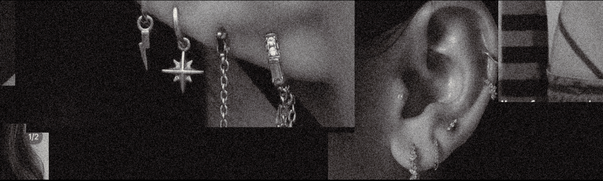
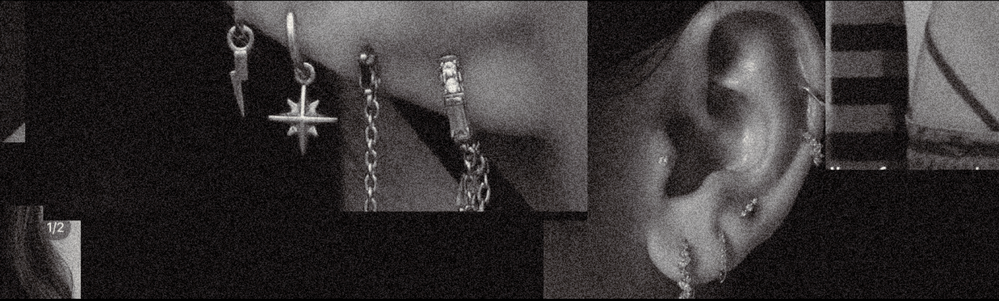

Lobe Piercing
What is a Lobe Piercing?
The lobe is the lower section of the ear, which is one of the most common piercings.
Types of Jewelry Used for Lobe Piercings
- Studs: Studs are great picks for new lobe piercings, as they are small and comfortable (plus they're easy to change when the time comes).
- Rings: Once they are healed, you can wear almost any types of jewelry, rings and hoops are people’s top choices.
Healing Time
2 to 4 months.